artemis-overview.RmdThe artemis R package was created to aid in the design and analysis of environmental DNA (eDNA) survey studies by offering a custom suite of models for quantitative polymerase chain reaction (qPCR) data from extracted eDNA samples. Data from eDNA sampling surveys is often analyzed with occupancy models or GLMS, but there are several characteristics of qPCR data in particular which made us feel that it would benefit from a different modeling approach. Specifically, our approach to this data makes use of Bayesian truncated latent variable models written in Stan.
artemis
We created the artemis R package to implement Bayesian censored latent variable models, which mitigate the weaknesses of common statistical analysis techniques applied to qPCR data. Additionally, artemis includes utilities to aid in the design and analysis of eDNA survey studies, including simulation and power analysis functions.
At its core, artemis is a specialized Generalized Linear Model, where the predictors are assumed to additively affect the response variable, in this case \(ln[eDNA]\),
\[ ln[eDNA]_{i} = X_{i} \beta \]
where \(\beta\) is a vector of effects on \(ln[eDNA]_{i}\), and \(X_{i}\) is a vector of predictors. Since artemis directly models the effect of the predictors on the latent (unobserved) variable, [eDNA], it is unnecessary for the researcher to back-transform the data prior to modeling. Internally, artemis conducts this conversion using the user-supplied values for the formula,
\[\hat{Cq_i} = \alpha_{std\_curve} + \beta_{std\_curve}* ln[eDNA]_i \]
Where \(\alpha_{std\_curve}\) and \(\beta_{std\_curve}\) are fixed values from setting the standard curve in the lab prior to qPCR.
Internally, the back-transformed \(ln[eDNA]_i\) values are considered a sample with measurement error from the true \(ln[eDNA]_i\) value (\(\hat{ln[eDNA]_i}\)) in the extract.
\[ ln[eDNA]_i \sim Trunc. Normal(\hat{ln[eDNA]_i}, \sigma_{Cq}, U) \]
Where the observed \(ln[eDNA]_i\) values are censored at the predetermined threshold, \(U\). This threshold is back-transformed from the threshold on Cq. Importantly, the \(\hat{ln[eDNA]}\) values in the model are not censored, allowing the latent variable to reflect the “true” [eDNA] beyond the censorship point. The likelihood that a sampled \(ln[eDNA]\) value will exceed the threshold is a function of the measurement error and the estimated latent \(\hat{ln[eDNA]_i}\) value. We calculate this likelihood using the normal cumulative distribution function, \(\Phi()\),
\[ Pr[ln[eDNA]_i > U ] = 1 - \Phi(\hat{ln[eDNA]_i} - \mu_i / \sigma)\]
Thus, the models in artemis account for the data censoring process by accounting for the probability that the observed value will exceed the threshold. As detection limits vary with genetic assay, the upper threshold on Cq in the model is adjustable by the user.
Lastly, there is an optional zero-inflated versions of both models, eDNA_lm_zinf() and eDNA_lmer_zinf(). From multiple experiments, it was observed there can be near-zero concentrations of eDNA even in situations where higher concentrations were expected. This was attributed to filter failures or other issues with sampling. To account for this mechanism, the zero-inflated versions of the models allow for zero [eDNA] concentrations from a secondary mechanism. Currently, the functions do not support user-provided predictors on the zero-inflated component, and just estimate a flat probability of zero detections for all observations. However, users can provide a prior for the expected probability of “true” zero observations from a secondary mechanism.
This model formulation makes several assumptions:
\(ln[eDNA]\) is assumed to be uniform within a sample.
\(ln[eDNA]\) is sampled with normally distributed errors.
There are no false detections, i.e. the measurement error cannot result in a positive detection when eDNA is not present in the sample.
Importantly, this formulation produces estimates of the effect sizes which:
are modeled directly on \(ln[eDNA]\) or copy number, rather than Cq, therefore are independent of the standard curve and can be compared between studies that use different standard curves.
account for the data censoring at the upper limit of qPCR cycles, which properly accounts for uncertainty and reduces bias in the estimates.
artemis
The artemis installation guide can be found here.
Since artemis was originally written to analyze aquatic eDNA samples, the examples and sample data included in the package (see ?eDNA_data) reference variables that are specific to aquatic eDNA survey data. These variables include volume (the the number of mililiters of water that went through the filter in each sample) and distance (the distance in meters from the source of eDNA). For example, eDNA_data is from a “live car” experiment, where eDNA was sampled at known distances from a source of eDNA (fish in a net pen in unidirectional flow).
In the following examples, tech_rep refers to qPCR replicates generated from a single extracted sample or filter; rep refers to a single extracted filter or sample.
artemis FunctionalityThe functions included in artemis can be grouped into a few categories; each category is either introduced in this vignette, or addressed in detail by its own vignette. Available vignettes are linked to individually below:
These categories are addressed in the sections that follow.
The artemis package also includes methods for R’s plot(), summary(), data.frame(), and predict() functions.
Often purpose of an eDNA sampling study is to inform a field sampling protocol. For these cases, we often want to know how likely we are to detect eDNA, given the way that we sampled. est_p_detect() returns the probability of getting a detection across all planned samples and replicates, where n_rep represents the product of the number of filters and technical replicates for each filter. For example, if you planned to take 2-5 filters at each variable level and then complete 6 extractions for each filter, that would be n_rep = 12:30.
p_detect = est_p_detect(variable_levels = c(Intercept = 1,
Distance = 100),
betas = c(Intercept = -10.5, Distance = -0.03),
ln_eDNA_sd = 1,
std_curve_alpha = 21.2, std_curve_beta = -1.5,
n_rep = 12:30)
p_detect
#> Variable levels:
#> Intercept Distance
#> 1 100
#>
#> n_reps p_detect
#> 1 12 0.8646429
#> 2 13 0.8854212
#> 3 14 0.9030098
#> 4 15 0.9178985
#> 5 16 0.9305016
#> 6 17 0.9411701
#> 7 18 0.9502009
#> 8 19 0.9578454
#> 9 20 0.9643164
#> 10 21 0.9697941
#> 11 22 0.9744309
#> 12 23 0.9783560
#> 13 24 0.9816785
#> 14 25 0.9844909
#> 15 26 0.9868717
#> 16 27 0.9888870
#> 17 28 0.9905929
#> 18 29 0.9920370
#> 19 30 0.9932593We can also plot this,
plot(p_detect)
Alternatively, we can also use a fit model to estimate the p(detect) for a set of circumstances. Unlike the above, using a fit model allows us to estimate the probability of detection with the uncertainty in our effect size estimates taken into account.
model_fit = eDNA_lm(Cq ~ Distance_m + Volume_mL,
data = eDNA_data,
std_curve_alpha = 21.2, std_curve_beta = -1.5,
seed = 1234,
chains = 1)
# Intercept is automatically supplied if in model_fit
p_detect2 = est_p_detect(variable_levels = c(Distance_m = 100,
Volume_mL = 50),
model_fit = model_fit,
n_rep = 1:12)
print(p_detect2)and we can plot the results,
plot(p_detect2, error_width = 0.1)
—